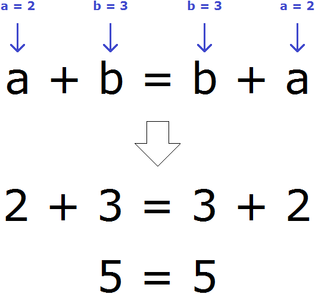
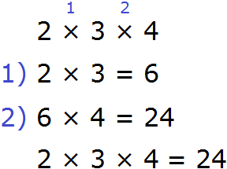
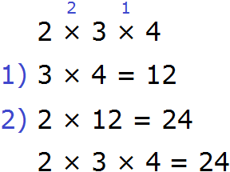
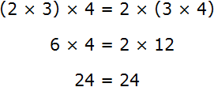
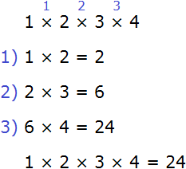
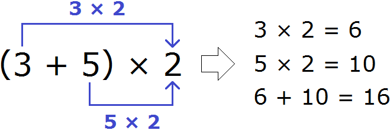
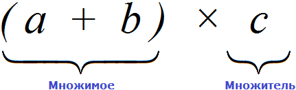
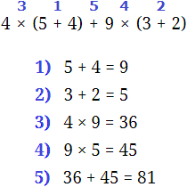

В жизни существуют законы, которые нужно соблюдать. Благодаря им сохраняются порядок, стабильность и возможность нормально развиваться. Нарушение законов нередко приводит к неприятным последствиям.
У математики тоже есть свои законы и правила. Если их не соблюдать, можно допустить ошибки в вычислениях. В учебе это обычно приводит к плохим оценкам, а в реальной жизни последствия могут быть гораздо серьезнее: сбои в работе компьютеров, ошибки в расчетах и даже аварии технических систем.
Законы математики основаны на простых свойствах и правилах. Многие из них знакомы вам со школы, но полезно ещё раз их повторить и хорошо запомнить.
В этом уроке мы рассмотрим лишь небольшую часть этих законов. Однако их будет достаточно для дальнейшего изучения математики.
Переместительный закон сложения
Переместительный закон сложения говорит о том, что от перестановки мест слагаемых сумма не изменяется.
Действительно, прибавьте пятерку к двойке — получите семёрку. И наоборот, прибавьте двойку к пятерке — снова получите семёрку:
5 + 2 = 7
2 + 5 = 7
Если на одну чашу весов положить пакет, в котором 10 килограмм яблок, и на другую чашу так же положить пакет, в котором 10 килограмм яблок, то весы выровнятся, и не важно что яблоки в пакетах лежат вразброс.
Если мы возьмём пакет с весов и перемешаем яблоки находящиеся в нём, словно шары в лотерейном мешке, пакет всё так же будет весить 10 килограмм. От перестановки мест слагаемых сумма не измéнится. Слагаемые в данном случае это яблоки, а сумма это итоговый вес.
Таким образом, между выражениями 5 + 2 и 2 + 5 можно поставить знак равенства. Это будет означать, что их сумма равна:
5 + 2 = 2 + 5
7 = 7
Предполагаем, что вы уже изучили урок «Выражения», поэтому теперь можем записать переместительный закон сложения с помощью переменных.
a + b = b + a
Записанный переместительный закон сложения будет работать для любых чисел.
Например, возьмём любые два числа. Пусть а = 2, b = 3. Мы присвоили переменным a и b значения 2 и 3 соответственно. Эти значения отпрáвятся в главное выражение a + b = b + a и подстáвятся куда надо. Число 2 подстáвится вместо а, число 3 — вместо b

Сочетательный закон сложения
Сочетательный закон сложения говорит о том, что результат сложения нескольких слагаемых не зависит от порядка действий. Этот закон позволяет группировать слагаемые для удобства их вычислений.
Рассмотрим сумму из трёх слагаемых:
2 + 3 + 5
Чтобы вычислить данное выражение, можно сначала сложить числа 2 и 3 и полученный результат сложить с числом 5. Для удобства сумму чисел 2 и 3 можно заключить в скобки, указывая тем самым, что эта сумма будет вычислена в первую очередь:
2 + 3 + 5 = (2 + 3) + 5 = 5 + 5 = 10
Либо можно сложить числа 3 и 5, затем полученный результат сложить с числом 2
2 + 3 + 5 = 2 + (3 + 5) = 2 + 8 = 10
Видно, что в обоих случаях получается один и тот же результат.
Таким образом, между выражениями (2 + 3) + 5 и 2 + (3 + 5) можно поставить знак равенства, поскольку они равны одному и тому же значению:
(2 + 3) + 5 = 2 + (3 + 5)
10 = 10
Запишем сочетательный закон сложения с помощью переменных:
(a + b) + c = a + (b + c)
Переместительный закон умножения
Переместительный закон умножения говорит о том, что от если множимое и множитель поменять местами, произведение не измéнится.
Например, умножим 5 на 2, а затем наоборот 2 на 5
5 × 2 = 10
2 × 5 = 10
В обоих случаях получается один и тот же результат, поэтому между выражениями 5 × 2 и 2 × 5 можно поставить знак равенства, поскольку они равны одному и тому же значению:
5 × 2 = 2 × 5
10 = 10
Запишем переместительный закон умножения с помощью переменных:
a × b = b × a
Для записи законов необязательно использовать переменные a и b. Вместо них можно взять любые другие буквы, например c и d, x и y или любые другие обозначения.
Например, переместительный закон умножения можно записать так:
x × y = y × x
Сочетательный закон умножения
Сочетательный закон умножения говорит о том, что при умножении нескольких чисел результат не зависит от того, как сгруппированы множители.
Рассмотрим следующее выражение:
2 × 3 × 4
Сначала можно перемножить числа 2 и 3, и полученный результат умножить на 4:

Либо сначала можно перемножить числа 3 и 4, и полученный результат перемножить с числом 2

Таким образом, между выражениями (2 × 3) × 4 и 2 × (3 × 4) можно поставить знак равенства, поскольку они равны одному и тому же значению:

Запишем сочетательный закон умножения с помощью переменных:
a × b × с = (a × b) × с = a × (b × с)
Пример 2. Найти значение выражения 1 × 2 × 3 × 4
Давайте вычислим данное выражение слева направо в порядке следования действий:

Распределительный закон умножения
Распределительный закон умножения позволяет умножать сумму на число, умножая на это число каждое слагаемое отдельно.
Рассмотрим следующее выражение:
(3 + 5) × 2
Мы знаем, что сначала надо выполнить действие в скобках. Выполним его:
(3 + 5) = 8
В главном выражении (3 + 5) × 2 выражение в скобках заменим на полученную восьмёрку:
8 × 2 = 16
Получили ответ 16. Этот же пример можно решить с помощью распределительного закона умножения. Для этого каждое слагаемое, которое в скобках, нужно умножить на 2, затем сложить полученные результаты:

Мы рассмотрели распределительный закон умножения слишком развёрнуто и подробно. В школе этот пример записали бы очень коротко. К такой записи тоже надо привыкать. Выглядит она так:
(3 + 5) × 2 = 3 × 2 + 5 × 2 = 6 + 10 = 16
Или ещё короче:
(3 + 5) × 2 = 6 + 10 = 16
Теперь запишем распределительный закон умножения с помощью переменных:
(a + b) × c = a × c + b × c
Давайте внимательно посмотрим на начало этого распределительного закона умножения. Начало у него выглядит так: (a + b) × c.
Если рассматривать выражение в скобках (a + b), как единое целое, то это будет множимое, а переменная с будет множителем, поскольку соединены они знаком умножения ×

Из переместительного закона умножения мы узнали, что если множимое и множитель поменять местами, то произведение не изменится.
Если множимое (a + b) и множитель c поменять местами, то получим выражение c × (a + b). Тогда получится, что мы умножаем переменную c на сумму (a + b). Для выполнения такого умножения, опять же применяется распределительный закон умножения. В данном случае переменную c нужно умножить на каждое слагаемое в скобках, а затем полученные результаты складывают:
c × (a + b) = c × a + c × b
Вычислим выражение 2 × (3 + 5)
2 × (3 + 5) = 2 × 3 + 2 × 5 = 6 + 10 = 16
Пример 2. Найти значение выражения 5 × (3 + 2)
Умножим число 5 на каждое слагаемое в скобках и полученные результаты сложим:
5 × (3 + 2) = 5 × 3 + 5 × 2 = 15 + 10 = 25
Пример 3. Найти значение выражения 6 × (5 + 2)
Умножим число 6 на каждое слагаемое в скобках и полученные результаты сложим:
6 × (5 + 2) = 6 × 5 + 6 × 2 = 30 + 12 = 42
Если в скобках располагается не сумма, а разность, то сначала нужно умножить множимое на каждое число, которое в скобках. Затем из полученного первого числа вычесть второе число.
Пример 4. Найти значение выражения 5 × (6 − 2)
Умножим 5 на каждое число в скобках. Затем из полученного первого числа вычтем второе число:
5 × (6 − 2) = 5 × 6 − 5 × 2 = 30 − 10 = 20
Пример 5. Найти значение выражения 7 × (3 − 2)
Умножим 7 на каждое число в скобках. Затем из полученного первого числа вычтем второе число:
7 × (3 − 2) = 7 × 3 − 7 × 2 = 21 − 14 = 7
Задания для самостоятельного решения
